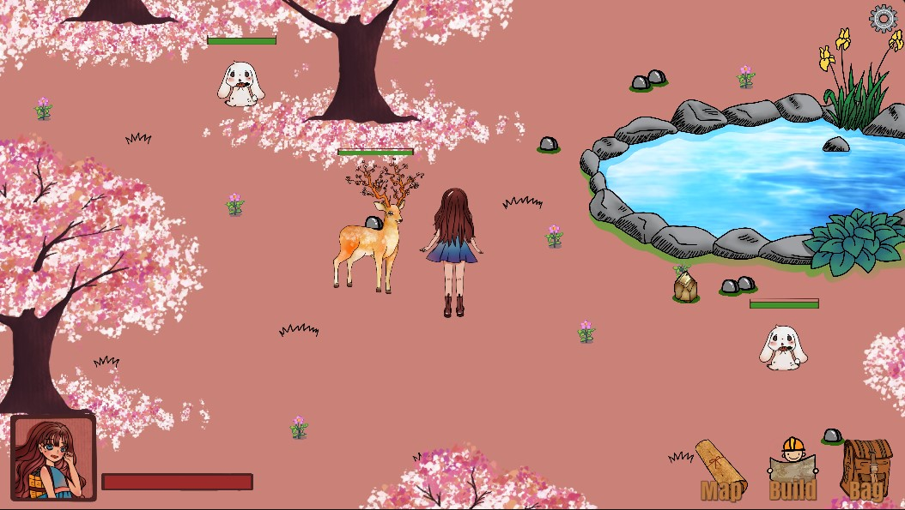

This is a school project I've done with my group members in a second year course. The Elderwood is a 2D role-play simulation and puzzle game made with Unity. We created a open world for the player to walk through the maps, collect and gather objects, tame animals, solve puzzles and so on. The main character Ray is lost in the forest. Help her survive in the mystical forest!
Group Members: Yuchen Cai, Yu Peng, Zimo Wu
Play the Game!The main purpose of this course and the project is to learn how to make creative games. I learnt that planning and prototyping are an essential part of making video games. It will be a waste of time if we implement a game yet no people want to play. Therefore, our group spent a lot of time on the novel idea behind our game.
The Elderwood is a SLG – simulation game where you not only build structures and produce tools, but also meet and domesticate various animals in an open world forest. To begin with, It is a 2D - 2 dimensional game. The simulation part is firstly reflected in vivid animals living in the forest as the topic of the game is mainly about them. Their reactions on eating, drinking, walking and running will be as realistic as real-life animals. Players will enjoy the time of playing with them. However, players should be aware of some of the species, because the animals can be innocent or unfriendly based on the game setting. Secondly, the forest full of various resources and opportunities will let the players enjoy a unique exploration experience. Searching for precious gems, obtaining necessary resources, and discovering unknown secrets, all of these well designed by us will be very unique with other games, which makes the game novel. On the second aspect, it will use the basic concept of other crafting games in a way of building homes and making tools, but differently in another way of feeding your animals which you capture in the forest. It contains all the aspects of how to feed an animal, and also, a group of animals if you want to build a zoo! We have seen a lot of great games with building mechanisms and creating mechanisms, and our game will have basically the same constructing theories of gathering resources etc., but give the players much more different modes of production. Briefly to say, our game is a brand new simulation game with a novel topic.
This game has a novel game type, a novel game experience as well as it implements a novel way of engaging player creativity. First of all, the game type is novel. This game is a simulation game, which is creative because most people consider action games, adventure games or racing games when they first think of a game. Simulation games are usually easier to play. The player will get a sense of achievement after making some effort each day. For example, they can collect stones each day and save money to buy carrots for their rabbits. The money they can earn each day is limited, so they need time to save money in order to buy furniture for their house or food for the pets. It is also important for them to organize how to use their money. Simulation games allow the player experience to be novel, since instead of an intensive game, this game gives the players a relaxing and comfortable experience, while the character brings pets home and raises them. Technically, the game will not end and the process of the game will be saved when the player quits the game. It is novel to have a slow-pace-game in this fast-pace-world. The game is designed more for girls because of the main idea of keeping pets and the game interface is also cute. Moreover, this game has a novel way of engaging player creativity. In the beginning tutorial of the game, the guide will walk through the process of creating the character and building the house. The player can decide what their house looks like. They will also need to decorate their houses on their own. When they go into the open world, they can choose their own way to gather resources and make money. Since the player can walk in the open world freely, they will meet animals randomly and choose whether they want to keep them as their pet. In general, there are no restrictions on how to build the house or how many pets a player can keep as long as it is a reasonable size, so the game allows players to create their own world with great flexibility. Each player might create an entirely different house with different pets. This game provides the player a chance to “live” in a world that they build. They can play around with it and come up with the world that they like. Therefore, this game is novel because simulation games are less common, the player experience will be relaxing and comfortable, as well as it gives the player flexibility on creating their own unique world.
Talking about the outline at a macro level, this game is a single-player game. The main character, who is a girl named “Lisa”, is controlled by you – the player, as the game is also an RPG – Role Playing Game, but the main idea will not be based on a long designed story as a standard RPG, and there are no NPCs – Non-player Characters. A huge forest map designed by us will be provided, and the player decides what they want to do to change the forest and how to create their own story. So that the degree of the freedom of the game could be high. The scene of the game is set to be facing you, which means you are playing the game with a third person perspective. You can see the main character in the middle of the map, and the grassland is flat at the front of your view. The above figure shows how “you” will be represented in the game in three direction - left, up and down. The “right direction” can be the horizontal rotation of left-moving.
The player can use the mouse to click on the direction key on the bottom right corner of the screen or they can move the character with the direction buttons on their keyboard. Because the game has no designed story, but just some single stories aiming to teach the player how to use the keyboard and mouse to control, there will not be an ending to the game. Thus, the broad goals will be created by the player’s bias. Different people can have different goals. Building a zoo with all kinds of animals on the map in it, building a home with just one or two animals you like the most and having a great life, having different stations and becoming the dominant on the map, searching for the secrets of the world, or achieving all of them, all can be the goals for players to work on. The major activity is to domesticate creatures and feed them. Let them become the best friend of you, and also they can be great tools to help you in the forest.
At a micro level, the hero of the game was “born” in a random place on the map. It starts with a tutorial that will help to assist you - the beginner of the game. The only thing you got at the start is an axe and a backpack with nothing else. The first thing it will ask you to do is to gain the most basic resources by chopping woods and picking up stones. All of the goods you gain or produce will be stored in your bag. Here, we have a mechanism where the bag can be upgraded. The bag is one of the most significant things throughout the whole game. The level of the bag determines the number of the goods you can pack on you, and the speed of walking, meaning you can walk faster by having a higher-level backpack. Besides, the bag has a production bar on it which means you build and construct things through the bag. Then, the level also determines the rate of constructing, meaning you can construct things faster when you have a higher-level bag. You also unlock new stuff by upgrading the bag.
Then we built a basic room using the bag. As the player completes the resources gathering missions, they will automatically have enough goods to build a 4 by 4 room. They need to open the backpack where they can see the production bar, select floor and wall - two elements for building a close room, build enough numbers of them and they will be generated in your bag. Roof here is not necessary according to our concern. Using these constructions - floor and wall you can actually build your room all over the forest. There is no limitation on the number of rooms you want to build, or the locations you want to establish. The player has total control and freedom on building their stations. Talking about the most important part of the game - animals, the system will also teach you how to tame an animal, as an example - dog. We designed all kinds of different ways of taming different species. In the given example, the way of taming a dog is to feed them with enough meat. As a dog is known as a human-friendly animal, it won’t attack you if you do not show threats to them. Other species in our game could be even harder to tame as some of them have the ability of automatic attacking. Here, we have a mechanism of the strength of an animal. There are 4 levels of strength - common, rare, epic and legendary. Legendary animals own more abilities than other three levels, where you can find very useful. Clearly, It is tougher to tame a high level species. After a success taming on an animal, you can bring them around or back to your stations. Different species need rooms which could fit them. Eg. Dogs need to live in a kennel. Therefore, you need to unlock more and more different pet’s houses for feeding them, or the animals will starve to death. The broad goals of the game are based on how the player wants them to be. Therefore, unlike other RPG games, there is no actual ending, which makes the game eternal to play. But, the character will die if she loses all her blood volume. In this case, the current goods she owns in the backpack will disappear, and the main character will revive in a random place in the forest. Thus, remembering the ways to home could be very essential. Saving games is important so that you can retry the activities or keep playing the game on another day by starting your saved games.
This game will be run in a web browser so that everyone can try the game in the “Creative Computing” show. Players will be able to access the game from a link using their own laptop. The game interface will be designed to fix the screen so that the player can have a better game experience.
This game will be run in a web browser so that everyone can try the game in the “Creative Computing” show. Players will be able to access the game from a link using their own laptop. The game interface will be designed to fix the screen so that the player can have a better game experience.